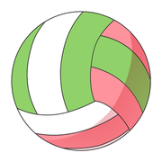

チームで呼ばれている名前を入れてください。次回からはこの入力なしでアプリが開きます。
ホーム画面に追加すると、アプリのようにすぐ開けます。
LINEなどのアプリの中で開いています。右下（または右上）のメニューから「Safariで開く」を選んでから、下の手順で追加してください。
※ホーム画面への追加は、このページを開いたまま行ってください。下のボタンでアプリを開いてから追加すると、アイコンが「練」になります。